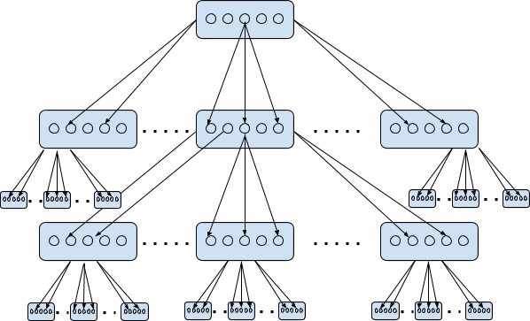

Broadcasting
Gossip is used widely in the Zilliqa network for messaging. However, the gossip protocol by design needs the information of all peers that must eventually receive the rumor.
This basic requirement for peer information is usually available to a node, except at the point when a new DS block has been mined. The DS block contains the peer information for all shards, which is extracted by each node to initialize its peer list and restart the gossip engine.
However, distributing the DS block itself is a problem that has to be dealt with in a different manner. The solution employed is tree-based cluster broadcasting. At the start of a new DS epoch, before DS block distribution, shard nodes don't know the information of the other nodes in the same shard. Thus, we leverage clustered multicasting in order to broadcast the DS block to all the nodes within a shard.
Design
- Assume that we have
Xnodes in a shard. We form clusters - each ofYnodes - out of these shard nodes. Each cluster, in turn, hasZchild clusters. - Every node is assigned a sequence number
nstarting from0, such thatn/Yrepresents the cluster it belongs to. For example,2/10 = 0,11/10 = 1. - Therefore, we should have a total of
X/Yclusters, indexed from0toX/Y-1. A nodenbelonging to clustern/Yis at levellog_Z(n/Y). - A node multicasts messages to nodes within the range
(n/Y * Z + 1)*Y~((n/Y * Z + Z + 1)* Y - 1). Bound checks on node index need to be done before multicasting. If the checks fail, we don’t broadcast.

Application
These are the parameters that control the broadcasting of DS blocks from DS committee nodes to shard nodes according to the design above.
<data_sharing>
<BROADCAST_TREEBASED_CLUSTER_MODE>true</BROADCAST_TREEBASED_CLUSTER_MODE>
<NUM_FORWARDED_BLOCK_RECEIVERS_PER_SHARD>3</NUM_FORWARDED_BLOCK_RECEIVERS_PER_SHARD>
<MULTICAST_CLUSTER_SIZE>10</MULTICAST_CLUSTER_SIZE>
<NUM_OF_TREEBASED_CHILD_CLUSTERS>3</NUM_OF_TREEBASED_CHILD_CLUSTERS>
</data_sharing>
BROADCAST_TREEBASED_CLUSTER_MODE: Toggles between tree-based cluster broadcasting or pure multicasting.NUM_FORWARDED_BLOCK_RECEIVERS_PER_SHARD: The number of shard nodes to initially receive the DS block from DS committee nodes.MULTICAST_CLUSTER_SIZE: The number of nodes in each cluster.NUM_OF_TREEBASED_CHILD_CLUSTERS: The number of child clusters for a given cluster.